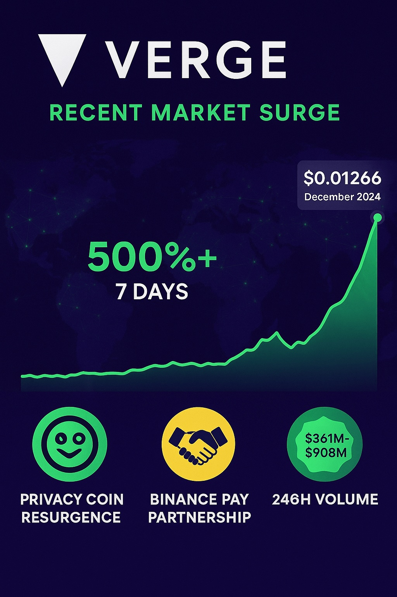

Verge Price Prediction for End of 2025: In-Depth Analysis and Insights
The information in this article is provided for educational purposes only and is not investment advice. Cryptocurrency investments carry significant risks, and past performance is not indicative of future results.
Introduction
As of August 20, 2025, 02:27 AM EEST, Verge (XVG) is trading at approximately $0.0066 USD, with a market capitalization of around $108.7 million. Launched in 2014 as DogeCoinDark and rebranded to Verge in 2016, Verge is a privacy-focused cryptocurrency that integrates Tor and I2P networks for anonymous transactions. Using a Proof-of-Work (PoW) protocol with multiple mining algorithms (Scrypt, X17, Lyra2rev2, Myr-groestl, and Blake2s), Verge prioritizes fast, low-cost transactions. This article provides a comprehensive analysis of Verge’s price outlook for the end of 2025, exploring bullish and bearish scenarios, growth drivers, risks, and technical analysis based on current market trends and recent developments.

Current Situation
Verge is currently priced at $0.0066, down 0.67% in the last 24 hours, with a 24-hour trading volume of approximately $5.5 million. Ranked #356 by market cap, Verge has a circulating supply of 16.52 billion XVG. Over the past year, XVG has lost 30% of its value, reflecting bearish sentiment, but recent developments, such as its inclusion in CoinMarketCap’s “Made in the USA” list and integration with SwapSpace, signal renewed interest. The Fear and Greed Index at 56 (Greed) indicates moderate market optimism, potentially supporting XVG’s recovery. Technical indicators show a bearish trend, with the Relative Strength Index (RSI) at 33, suggesting oversold conditions, and the 50-day Simple Moving Average (SMA) at $0.00693, slightly above the current price.
Price Predictions for End of 2025
Price predictions for Verge (XVG) by December 2025 vary widely due to its volatility and the speculative nature of privacy coins. Based on aggregated analyst forecasts from recent sources:
- Bearish Scenario: If regulatory pressures on privacy coins intensify or market adoption stalls, XVG could drop to $0.001–$0.004, aligning with pessimistic projections from TradingBeast and PricePrediction.net.
- Moderate Scenario: Most analysts expect XVG to trade between $0.0075 and $0.0137, supported by steady adoption and a potential crypto market rally. CCN predicts $0.0137, a 108% increase from current levels, while Changelly estimates an average of $0.0075–$0.0124.
- Bullish Scenario: Optimistic forecasts, driven by increased privacy coin demand and a Q1 2025 bull run, suggest XVG could reach $0.035–$0.22. CoinLore’s bullish prediction of $0.2201 assumes a 3,522% surge, though this is highly speculative. Coinpedia’s more conservative estimate of $0.03508 is plausible with strong adoption.
A realistic range is $0.0075–$0.035, with an average around $0.01–$0.013, balancing moderate adoption with market volatility. Long-term projections for 2030 range from $0.018 (Ambcrypto) to $0.5227 (CoinLore), but these depend on significant ecosystem growth.
Factors Driving Price Growth
- Privacy Coin Demand: Growing concerns over data privacy could boost demand for Verge’s Tor and I2P-integrated transactions, especially in regions with restrictive financial systems.
- Market Rally: A projected crypto bull run in Q1 2025, driven by Bitcoin’s post-halving momentum, could lift XVG’s price, as altcoins often follow BTC’s lead.
- Exchange Integrations: Recent integrations, such as SwapSpace’s trading widget and availability on Binance, Huobi, and Gate.io, enhance liquidity and accessibility.
- Fast Transactions: Verge’s ability to process 100 transactions per second with low fees makes it attractive for peer-to-peer payments.
- Community and Development: Verge’s open-source, community-driven model and ongoing development by founder Justin Valo foster long-term potential.
Risks and Downward Factors
- Regulatory Scrutiny: Privacy coins face increasing regulatory pressure, with potential bans in major jurisdictions impacting XVG’s adoption and exchange listings.
- Competition: Stronger privacy coins like Monero and Zcash, with more robust ecosystems, could overshadow Verge’s market share.
- Past Controversies: A 2018 network attack that exploited Verge’s mining algorithm damaged its reputation, and lingering trust issues may deter investors.
- Bearish Technicals: Current bearish signals, with the price below the 50-day SMA and RSI near oversold, suggest short-term downward pressure.
- Market Volatility: Verge’s high volatility (7.72% over 30 days) and dependence on broader market trends increase downside risk.
Volatility Analysis
From July to August 2025, Verge’s price fluctuated between $0.0058 and $0.0081, with a 30-day volatility of 7.72%. The RSI at 33 indicates an oversold market, potentially signaling a short-term rebound if buying pressure increases. The 50-day SMA at $0.00693 and 200-day SMA at $0.00676 suggest resistance and support levels, respectively, with the price trading near the lower Bollinger Band ($0.0058). Trading volume has risen to $5.5 million daily, reflecting moderate liquidity. A projected Q1 2025 market rally could drive XVG toward $0.01–$0.013, but bearish sentiment (53% bearish signals) and regulatory risks may cap gains. Posts on X mentioning altcoin surges (10x–30x) are speculative and not specific to XVG, so they are treated as inconclusive.
Conclusion
By the end of 2025, Verge (XVG) is projected to trade between $0.0075 and $0.035, with a moderate forecast of $0.01–$0.013, driven by growing privacy coin demand, exchange integrations, and a potential market rally. However, risks such as regulatory scrutiny, competition, and past controversies could limit upside potential. Investors should conduct thorough research, monitor technical indicators, and exercise caution due to Verge’s volatility and regulatory challenges. Consulting financial experts is recommended before investing in XVG.